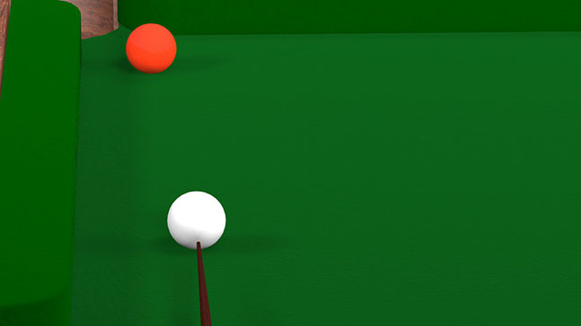

Creative Digital Media - What you learn
3D Graphics
One of the more labour-intensive modules in the first semester, but don't let this put you off as it is a highly enjoyable class. This module covers a huge amount of theory surrounding 3D modelling, texturing, lighting and animation and uses the program 3DS Max.
Evolving Web Technologies
A continuation of semester one's Web Devlopment module but expanding the knowledge base to take in responsive web design and search engine optimisation, again all essential in the digital media sphere. The skill level increases in CSS also with the introduction of grids and flexbox.
Digital Video
This teaches the fundamentals of digital video from planning, storyboarding, framing, filming, editing and post-production. It focuses on creating a narrative and communicating a theme through the medium of film.
Web Programming
The first semester deals with learning the basics of javascript, an object-oriented computer programming language commonly used to create interactive effects within web browsers. The second semester moves on to PHP and its applications in back-end functionality, XML and web services.
Human Factors in HCI
An elective module in semester two, it covers a broad range of topics such as language, visual perception, emotions and body language. It aims to provide a better understanding of how humans interact with each other and technology and how to apply this knowlege in UX design.
Web Development
The Web development module teaches website design, content development, HTML5 and CSS3, eveything you need to build a basic website and excel in creative digital media.
Technology Futures and Connected Living
Smart connected devices are transforming our world. This module aims to provide the technical skills required to build an Internet of Things (IoT) application that collects data, intelligently processes that data and communicates the results, via the interne).
Interaction Design
A core module of UX/UI, this covers a lot of information regarding design principles and web design protocols. This is one of the more creative modules and predominently uses Adobe Creative Suite software like Photoshop, Illustrator and InDesign.
Interactive Interface Design
This module is about understanding what makes a good interface, by delving into usability and user experience. Both usability and user experience are extremely important in the world of Interaction Design. To do this we must better understand our users and so therefore, better understand the Human perception of the world around us. Interaction design means designing interactive products to support the way people communicate and interact in their everyday and working lives.
Database Systems and Design
This module teaches the basic theory behind multimedia databases. You learn how to manage and sort tables (relations) and how to use SQL to interact with the database and its tables using Microsoft Access and phpMyAdmin
Project
A full semester of a multimedia project using the RSA's Student Design Awards Briefs for the themes. I chose to make a responsive multimedia website.
Work Placement
The third semester of the course is a three-month work placement with a business or company in one of the fields of study to gain practical experience.